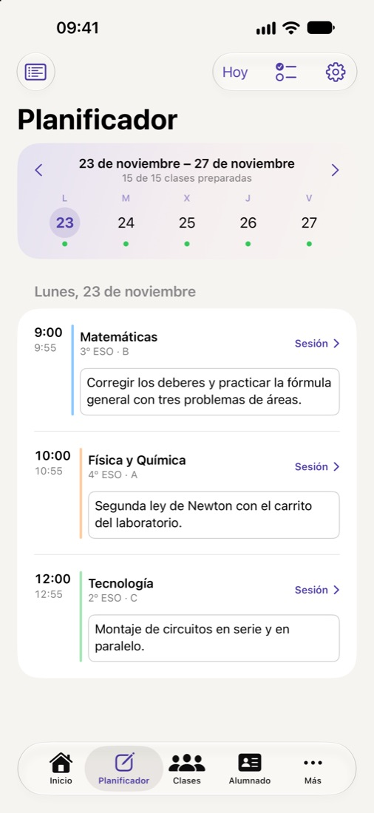
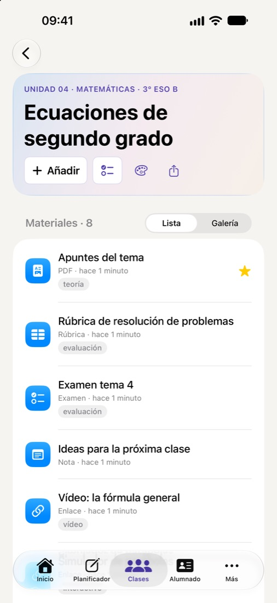
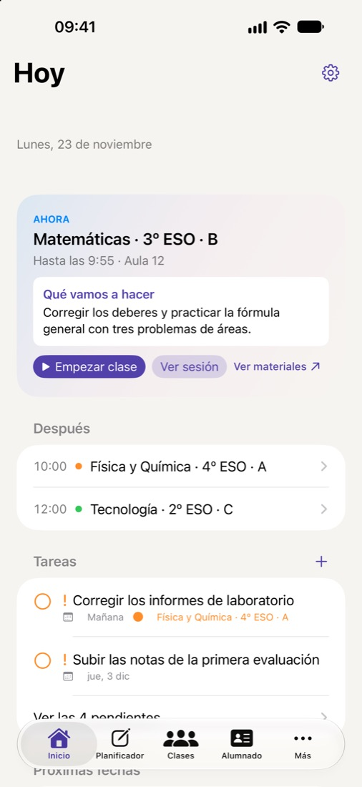
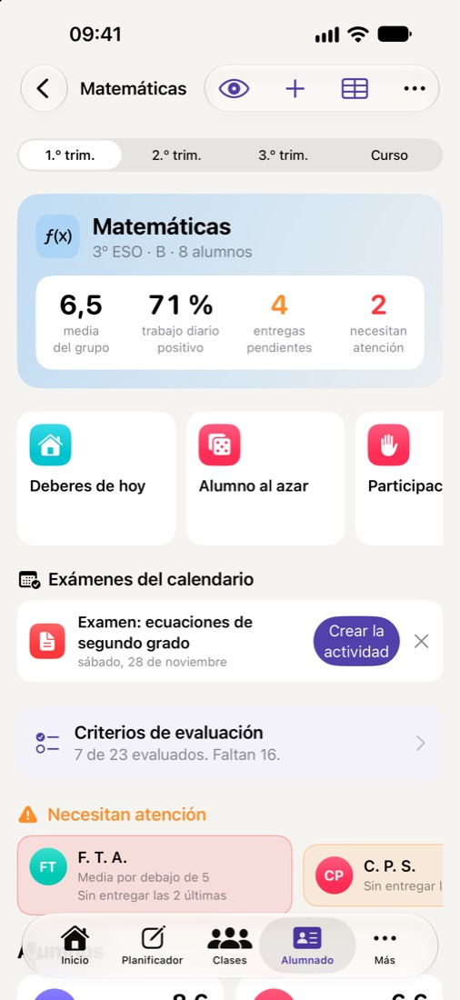
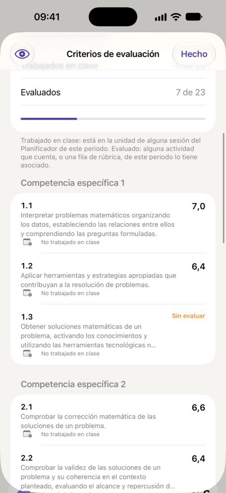

Kude es el cuaderno del profesor para iPad, iPhone y Mac: prepara cada sesión, da la clase con el material a mano y evalúa con los criterios LOMLOE de tu comunidad o los de tu ciclo de FP.
Descargar en el App StoreTu horario y un planificador semanal donde apuntas qué vas a hacer en cada sesión, los deberes y dónde os quedasteis.


«Empezar clase» abre la sesión a pantalla completa con su material en orden. Por el proyector solo se ve el material: ni botones ni notas.

Exámenes, trabajo diario, entregas y rúbricas por grupo, con los currículos oficiales del Estado y de las 17 comunidades y todos los títulos de FP ya dentro.


Consulta las competencias específicas y los criterios de evaluación de Infantil, Primaria, ESO y Bachillerato de tu comunidad, por materia y curso, y los de todos los títulos de Formación Profesional. Son los mismos que trae Kude para evaluar con ellos.
Formación Profesional · Grado Básico, Medio, Superior y cursos de especialización ›
En Instagram enseñamos en vídeos cortos cómo preparar la semana, proyectar el material o evaluar con criterios en Kude, y contamos las novedades antes que nadie.
No hay registro, ni publicidad, ni analítica. Abres Kude y empiezas.
Todo se queda en tu dispositivo y, si quieres, se sincroniza entre iPad, iPhone y Mac con tu iCloud.
Face ID opcional para el cuaderno, y las notas se ocultan solas al conectar el proyector.
¿Tienes una duda, un problema o una idea para mejorar Kude? Escribe a ivan.arco.dona@gmail.com e intentaré responderte lo antes posible.
Antes de escribir, prueba esto:
Esta web y la app Kude son de Iván Arco (España). Contacto: ivan.arco.dona@gmail.com.
Esta web no usa cookies ni herramientas de análisis. Apple, iPad, iPhone, Mac, Apple Pencil e iCloud son marcas de Apple Inc.
Disponible en español, inglés, portugués, italiano y alemán.